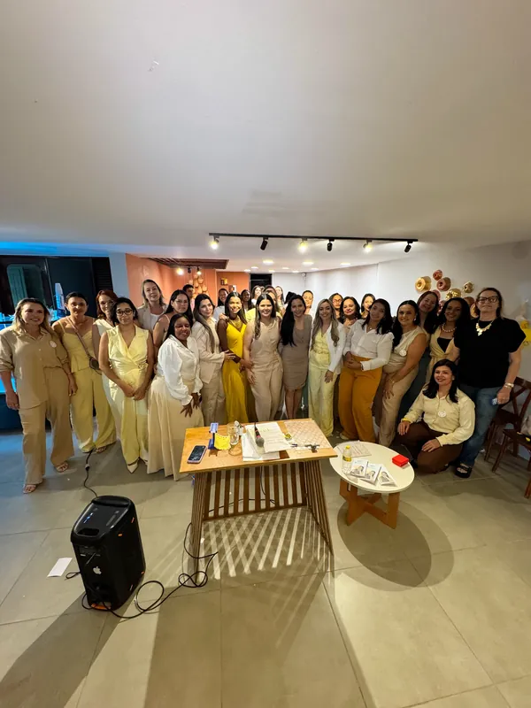

Atendimento online
Sessões de 50 minutos por videochamada no Google Meet, com a mesma escuta dedicada, de onde você estiver.
Sua mente sem filtros
Rute Gabrielle é psicanalista e atende online e presencialmente em Caruaru e Altinho (PE). Um espaço para pausar, olhar para dentro e dar nome àquilo que muitas vezes é carregado em silêncio.
Abordagem
Rute Gabrielle oferece um tratamento focado no alívio de dores emocionais e no desenvolvimento pessoal, construindo um espaço terapêutico livre de julgamentos. O ato de falar e de ser ouvido sem amarras funciona como uma poderosa ferramenta de mudança interna.
Sessões de 50 minutos por videochamada no Google Meet, com a mesma escuta dedicada, de onde você estiver.
Sessões de 50 minutos em consultório, para quem prefere o espaço físico da sessão.
Sessões de 50 minutos em consultório, com o mesmo cuidado e sigilo.
Sobre
Rute Gabrielle é psicanalista e atende online e em consultório em Caruaru e Altinho, no Agreste de Pernambuco. Seu trabalho parte da escuta: oferecer um lugar onde cada pessoa possa falar livremente e, a partir da própria fala, compreender e transformar aquilo que a faz sofrer.
Além da clínica, é palestrante e apoiadora de iniciativas de fortalecimento emocional entre mulheres, como o Café com as Blindadas, e usa o Instagram @rutegabrielle.psic para falar de saúde mental de forma acessível.
Como funciona
A psicanálise é um método de tratamento criado por Sigmund Freud que trabalha pela palavra: ao falar livremente para uma analista, a pessoa entra em contato com desejos, conflitos e memórias inconscientes que influenciam seus sintomas, angústias e repetições.
Não há roteiro, conselhos prontos ou respostas certas: o tratamento acontece no encontro entre quem fala e quem escuta, respeitando o tempo e a história de cada pessoa. Na prática, o percurso costuma seguir estes passos:
As sessões iniciais, chamadas entrevistas preliminares, servem para conhecer o que te traz, construir confiança e combinar juntos como será o trabalho — horários, frequência e valores.
Você é convidado a falar o que vier à mente, sem filtro nem censura — mesmo o que parecer sem importância, confuso ou constrangedor. É a chamada associação livre, a regra fundamental da psicanálise.
A analista acompanha sua fala com atenção flutuante: uma escuta aberta, que não seleciona nem julga, atenta a repetições, lapsos, sonhos e silêncios que dizem mais do que parece.
Sentimentos e expectativas que surgem na relação com a analista — a transferência — também viram material de trabalho, ajudando a compreender e ressignificar padrões antigos.
As sessões costumam ser semanais, em dia e horário fixos. Não existe duração pré-definida: o processo segue o ritmo de cada pessoa e pode ser encerrado quando fizer sentido.
Tudo o que é dito em sessão permanece entre você e a analista. O sigilo é a base de um espaço seguro, onde é possível falar sobre qualquer assunto.
Referências: Sigmund Freud, A dinâmica da transferência (1912), Recomendações ao médico que pratica a psicanálise (1912) e O início do tratamento (1913).
Pilares da atuação
Falar e ser ouvido sem amarras é uma poderosa ferramenta de mudança interna.
Um convite para pausar e dar nome àquilo que é carregado em silêncio no cotidiano.
O cuidado emocional é contínuo — combustível para todos os meses, não só em crise.
Palestrante e apoiadora de iniciativas de empoderamento e troca entre mulheres.
Dúvidas frequentes
O agendamento é feito pelo WhatsApp (81) 99607-4872. Na conversa, você escolhe entre atendimento online ou presencial em Caruaru ou Altinho e combina o melhor dia e horário.
Sim. A sessão online acontece por videochamada no Google Meet e mantém o mesmo método e o mesmo sigilo do consultório. Basta um lugar reservado, fone de ouvido e conexão estável, de onde você estiver.
Os atendimentos presenciais acontecem em consultório nas cidades de Caruaru e Altinho, em Pernambuco. O endereço é enviado no momento do agendamento.
Cada sessão dura 50 minutos, tanto no formato online quanto no presencial.
Em geral, as sessões são semanais, em dia e horário fixos. A frequência pode ser ajustada conforme o momento e a necessidade de cada pessoa.
Não existe um prazo pré-definido. A psicanálise respeita o tempo de cada pessoa: há quem busque ajuda para uma questão pontual e quem faça um percurso mais longo de autoconhecimento. O encerramento é conversado quando fizer sentido.
O psicólogo é graduado em Psicologia e registrado no Conselho Regional de Psicologia (CRP). O psicanalista tem formação específica em psicanálise, que inclui estudo teórico, análise pessoal e supervisão clínica. Rute Gabrielle atua como psicanalista.
Os valores variam conforme a modalidade, online ou presencial, e são informados pelo WhatsApp no momento do agendamento.
Sim. Tudo o que é dito em sessão permanece entre você e a analista. O sigilo é um compromisso ético e a base de um espaço seguro para falar sobre qualquer assunto.
Em crise ou emergência? A psicanálise não substitui atendimento de urgência. Ligue 188 (CVV, 24 horas e gratuito) ou 192 (SAMU).
Café com as Blindadas
Um evento para o público feminino que promove fortalecimento emocional, espiritual e networking entre mulheres. Rute Gabrielle integra o projeto como uma de suas embaixadoras e apoiadoras oficiais, compartilhando sua própria história e aprendizados.
Baseado na premissa de que ninguém precisa caminhar sozinha, o encontro reúne palestrantes, empreendedoras e mentoras em uma tarde de conexão, autoconhecimento e renovação de esperança.
Apoiadora oficial do Café com as Blindadas — 6ª edição, Caruaru (PE), setembro de 2026
Galeria

Fale diretamente pelo WhatsApp para agendar sua sessão ou acompanhe o trabalho no Instagram.
WhatsApp: (81) 99607-4872